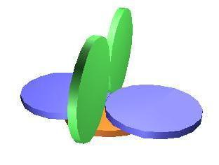

智力题合辑…
五个大小相同的一元人民币硬币。要求两两相接触，应该怎么摆?

ps:两个蓝色的可以微微翘起保证接触
三个枪手随意射击,小李30%小黄50%小林100%,小李小黄小林的顺序出手,问什么策略谁活下来概率最大?
小李概率最大.
小李：第一枪应该故意打空。如果他打死小黄，小林下一枪会100%打死他；如果他打死小林，小黄下一枪有50%几率打死他。所以放空枪让他有机会在下一轮继续先手。
小黄：必须瞄准小林。因为小林是最大威胁，且小林一旦获得机会必定会先杀小黄。
小林：瞄准小黄。因为小黄对他的威胁比小李更大。
在一张长方形的桌面上放了n个一样大小的圆形硬币。这些硬币中可能有一些不完全在桌面内，也可能有一些彼此重叠;当再多放一个硬币而它的圆心在桌面内时，新放的硬而便必定与原先某些硬而重合。请证明整个桌面可以用4n个硬币完全覆盖
题目条件等价于：桌面上任意一点到最近硬币圆心的距离都小于硬币的直径（否则就能在空隙处放下新硬币）。
也就是说，用 n 个半径为“直径”的大圆可以覆盖整个桌面。
将桌面和硬币的尺度都缩小一半，那么每块小桌面（原桌面的1/4）都可以用 n 个半径减半的硬币覆盖。
将桌面分成4块相同的小桌面，每块都能用 n 个硬币覆盖，因此整个桌面可以用 4n 个硬币完全覆盖。
一个球、一把长度大约是球的直径2/3长度的直尺,你怎样测出球的半径?
靠在一个垂直桌面上,球和尺子交点.
三人分汤问题
递归解决:
A首先分成n份,因为a最后选所以期望是分成尽可能平均的.
然后所有剩下的人各选一个,他们都选自己觉得最多的.
最后A拿到剩下的最后一碗.
然后变成n-1人分汤问题…
元数据
Fluu能自己想出来的,放到下面了
有一个池塘，里面有无穷多的水。现有2个空水壶，容积分别为5升和6升。问题是如何只用这2个水壶从池塘里取得3升的水。
做差.
6只做化验用的玻璃杯，前面3只盛满了水，后面3只是空的。只移动1只玻璃杯，把盛满水的杯子和空杯子间隔起来吗
移动一个杯子,然后把水倒走.